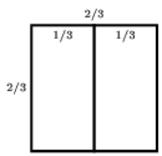

A rectangle is cut into several smaller rectangles, the perimeter of each of which is an integer number of meters. Is it true that the perimeter of the original rectangle is also an integer number of meters?
1/3 + 2/3 = 1.
For example, a square with a side of 2/3 m can be cut along the midpoint of its side into two rectangles, the perimeters of which are equal to 2 m.

No, it is not true.
There are other examples.